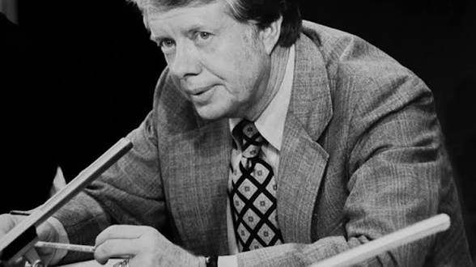

Jimmy Carter, United States president from 1977 until 1981, reported seeing an unidentified flying object while at Leary, Georgia, in 1969.

In 1969 (two years before he became Governor of Georgia), Carter was preparing to give a speech at a Lions Club meeting. He reported that at about 7:15 pm, one of the guests directed his attention to a strange bright white object, about as bright as the moon, and about 30 degrees above the horizon to the west of where they were standing. It moved toward their direction, but stopped beyond a stand of pine trees some distance from them. The object then changed color, first to blue, then to red, then back to white, before appearing to fade into the distance after 10 to 12 minutes, also witnessed by 10 to 12 people.
In my opinion, no because Jimmy Carter had a high profile and considering E.T encounters are often ridiculed especially back then, it would be illogical for him to risk his reputation for some traction. Furthermore, the fact that there are multiple witnesses also makes it pretty believable.